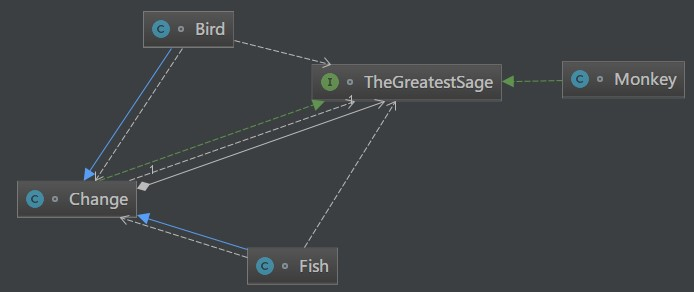
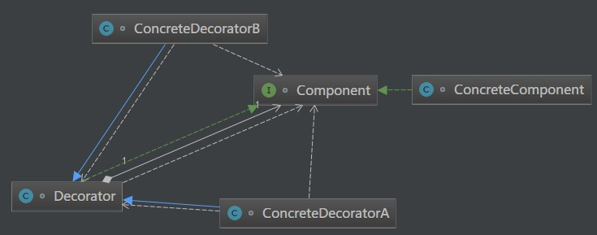
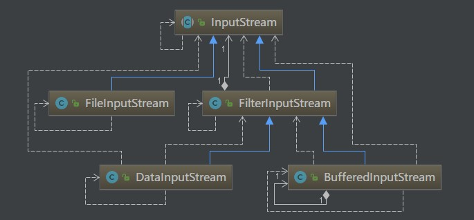

原文连接:https://www.cnblogs.com/cicada-smile/p/11432933.html
本文源码：GitHub·点这里 || GitEE·点这里
一、生活场景
1、场景描述
孙悟空有七十二般变化，他的每一种变化都给他带来一种附加的本领。他变成鱼儿时，就可以到水里游泳；他变成鸟儿时，就可以在天上飞行。
2、场景图解

3、代码实现
public class C01_InScene {
public static void main(String[] args) {
TheGreatestSage greatestSage = new Monkey();
TheGreatestSage fish = new Fish(greatestSage);
fish.shapeDesc();
// 这里虽然是鱼形态，但是本体是悟空，所以可以直接变化
TheGreatestSage bird = new Bird(fish);
bird.shapeDesc();
}
}
// 顶级接口
interface TheGreatestSage {
// 定义一个描述形态的方法
void shapeDesc ();
}
// 悟空本尊
class Monkey implements TheGreatestSage{
@Override
public void shapeDesc() {
System.out.println("Monkey.move()");
}
}
// 包装一层变化的描述
class Change implements TheGreatestSage {
private TheGreatestSage greatestSage;
Change(TheGreatestSage greatestSage){
this.greatestSage = greatestSage;
}
@Override
public void shapeDesc() {
greatestSage.shapeDesc();
}
}
// 具体的变化形态
class Fish extends Change{
public Fish(TheGreatestSage greatestSage) {
super(greatestSage);
}
public void shapeDesc(){
System.out.println("鱼在水中游...");
}
}
class Bird extends Change{
public Bird(TheGreatestSage greatestSage) {
super(greatestSage);
}
public void shapeDesc(){
System.out.println("鸟在空中飞...");
}
}二、装饰模式
1、基础概念
装饰模式又名包装(Wrapper)模式。装饰模式以对客户端透明的方式扩展对象的功能，是继承关系的一个替代方案。
装饰模式以对客户透明的方式动态地给一个对象附加上更多的责任。换言之，客户端并不会觉得对象在装饰前和装饰后有什么不同。装饰模式可以在不使用创造更多子类的情况下，将对象的功能加以扩展。
2、核心角色
抽象构件角色
给出一个抽象接口，以规范准备接收附加责任的对象。
具体构件角色
定义一个将要接收附加责任的类。
装饰角色
持有一个构件对象的实例，并定义一个与抽象构件接口一致的接口。
具体装饰角色
负责给构件对象“贴上”附加的责任。
3、模式图解

4、源代码实现
// 抽象构件角色
interface Component {
void sampleOperation();
}
// 具体构件角色
class ConcreteComponent implements Component{
@Override
public void sampleOperation() {
System.out.println("业务相关代码");
}
}
//装饰角色
class Decorator implements Component{
private Component component;
public Decorator(Component component){
this.component = component;
}
@Override
public void sampleOperation() {
//委派给构件进行处理
component.sampleOperation();
}
}
// 具体装饰角色
class ConcreteDecoratorA extends Decorator{
public ConcreteDecoratorA(Component component) {
super(component);
}
@Override
public void sampleOperation() {
super.sampleOperation();
System.out.println("A.处理相关业务的代码");
}
}
class ConcreteDecoratorB extends Decorator{
public ConcreteDecoratorB(Component component) {
super(component);
}
@Override
public void sampleOperation() {
super.sampleOperation();
System.out.println("B.处理相关业务方法");
}
}5、该模式简化
- 简化抽象类
如果只有一个ConcreteComponent类，那么可以考虑去掉抽象的Component类（接口），把Decorator作为一个ConcreteComponent子类。
- 简化装饰类
如果只有一个ConcreteDecorator类，那么就没有必要建立一个单独的Decorator类，而可以把Decorator和ConcreteDecorator的责任合并成一个类。
6、半透明说明
1)、纯粹的装饰模式很难找到。装饰模式的用意是在不改变接口的前提下，增强类的功能。
2)、在增强功能的时候，往往需要建立新的公开的方法。
3)、这就导致了大多数的装饰模式的实现都是“半透明”的，而不是完全透明的。换言之，允许装饰模式改变接口，增加新的方法。这意味着客户端可以声明ConcreteDecorator类型的变量，从而可以调用ConcreteDecorator类中才有的方法。
4)、半透明的装饰模式是介于装饰模式和适配器模式之间的。适配器模式的用意是改变类的接口，也可以通过改写一个或几个方法，或增加新的方法来增强类的功能。
5)、大多数的装饰模式实际上是半透明的装饰模式，这样的装饰模式也称做半装饰、半适配器模式。
三、实际应用
1、JDK中IO流
1)、基本描述
装饰模式在Java语言中的最经典的应用就是Java I/O类库的设计。很少单一的创建流对象，通过创建多个叠合对象来提供所期望的IO流功能，因此装饰模式是Java I/O类库的基本模式。
2)、IO流图解描述

- 抽象构件角色
由InputStream扮演。这是一个抽象类，为各种子类型提供统一的接口。
- 具体构件角色
由FileInputStream、StringBufferInputStream等类扮演。它们实现了抽象构件角色所规定的接口。
- 抽象装饰角色
由FilterInputStream扮演。它实现了InputStream所规定的接口。
- 具体装饰角色
由几个类扮演，分别是BufferedInputStream、DataInputStream以及两个不常用到的类LineNumberInputStream、PushbackInputStream。
四、优缺点总结
1、模式的优点
（1）装饰模式与继承关系的目的都是要扩展对象的功能，但是装饰模式可以提供比继承更多的灵活性。装饰模式允许系统动态决定“贴上”一个需要的“装饰”，或者除掉一个不需要的“装饰”。继承关系则不同，继承关系是静态的，它在系统运行前就决定了。
（2）通过使用不同的具体装饰类以及这些装饰类的排列组合，工程师可以创造出很多不同行为的组合。
2、模式的优点
由于使用装饰模式，可以比使用继承关系需要较少数目的类。使用较少的类，当然使设计比较易于进行。但是，在另一方面，使用装饰模式会产生比使用继承关系更多的对象。
五、源代码地址
GitHub地址：知了一笑
https://github.com/cicadasmile/model-arithmetic-parent
码云地址：知了一笑
https://gitee.com/cicadasmile/model-arithmetic-parent：装饰模式3.png)